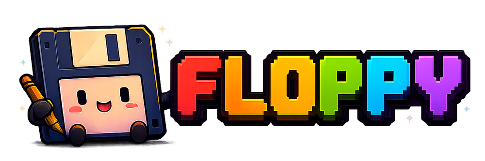

Independent software
Small projects with a lot of personality.
A home for the tools I build, maintain, and use every day.

Featured project
Everything in one place.
Floppy is a self-hosted media tracker for movies, television, anime, books, games, music, podcasts, and the rest of the things you spend your free time enjoying.